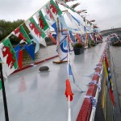
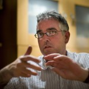

Leon Cych: educational innovator
Learn 4 Life is becoming the one place for in-depth news about innovation in education in the UK and the world. No-where else is there a service like this for the ICT teaching and advisory community. We believe in constant innovation and are continually searching out and highlighting good practice in and outside learning institutions.
Rachel Jones: educational strategist
I have around 20 years’ teaching experience in London schools including secondary headship, with the additional challenge of leading the school out of ‘special measures’ (the most severe level of school failure in the UK). A key lever was using technologies to accelerate improvements in the quality of teaching and learning. Piloting the Ingenium Classroom of the Future provided a nationally recognised focus for this, particularly in the BSF programme.
My experience includes extensive advisory and inspection work. As a Local Authority inspector my main role was school effectiveness, however I also steered the CPD programme for ICT across primary, secondary and special schools, with a particular focus on leadership. I have also joined occasional Ofsted inspection teams. I continued providing school improvement support to under-performing schools through various programmes since leaving LA work and headship.
Since 2006 I have steered education strategy with Steljes, an innovative company which brings new technologies to the UK and supports their adoption, including the development and promotion of effective pedagogies. I am currently Chair of Trustees at the British Council for School Environments, the UK’s leading charity concerned with the design of schools and educational spaces, for which I wrote this paper on Learning Technologies back in 2007. In autumn 2012 I am joining the Elliot Foundation as its Education Director.
Steve Kendall: University of Bedfordshire
For me, 21st Century denotes the distant future (as it did when I was a child). It is hard for me to grasp that that future is upon us and that 12% of it has already elapsed. I think that teachers need to know those digital technologies are used by young people (and other learners), how those uses might be enhanced and their educational value increased and how to encourage their use to enhance learning. Prowess can be assessed via evidence that their learners are successful.
I have worked at the University of Bedfordshire or one of its predecessor organisations since 1983 – nearly 30 years. I am the Associate Dean of Partnerships and Director of Widening Participation. This means that I help to manage the University’s relationship with its partner colleges – who deliver hundreds of our courses to thousands of students registered for our awards. I also have responsibility for our ‘access’ programmes which reach out to learners in the communities around us and try to engage them with what we cam offer. I have just been travelling in Belgium in a battered old camper van, which is a common recreation for me and my family.
Theo Kuechel: Media and Learning
 I graduated at Hornsey College of Art, and taught Art & Design, ICT and Media in K12 schools. My current work is divided between my role as researcher/consultant at the University of Hull, and an independent consultant for digital media and technologies for learning.
I graduated at Hornsey College of Art, and taught Art & Design, ICT and Media in K12 schools. My current work is divided between my role as researcher/consultant at the University of Hull, and an independent consultant for digital media and technologies for learning.
Working with Kevin Burden, Director Postgraduate PD, at the University of Hull, I have been involved in a number of international projects, involving e-Content and digital media. These include Edutube Plus, a multilingual video library that was implemented as a pilot in schools across Europe, plus an international collaborative media project involving schools in US, Sweden, China and the UK. I have also worked with Kevin on the ITN Newsfilm Online archive and the JISC Digitisation Project; supporting HE and FE in adopting these resources for teaching and learning.
I have written teachers PD courses for Naace, (UK Advisers in ICT), covering Finding Digital resources, Digital Media, Visual Learning, Video for Learning Copyright and e-Safety. I believe OER and Creative Commons media offer educators unique opportunities for developing innovative teaching and learning models.
Recent presentations include, EdMedia, Alt-C, Diverse (Portland, Maine 2010 and Dublin 201i) and a workshop on eTextbooks at the 7th Pan Hellenic ICT Conference, Greece, (Sept 2010). Media & Learning Brussels 2011, BETT2012, Naace2012 and Plymouth Enhanced Learning Conference 2012
I was invited, to contribute in the role of an international expert in eContent, to a strategic think tank for ictQATAR in Doha and help develop the Qatar’s educational content strategy (Nov 2010-11), I have recently given workshops at Dublin City University and am working with Leon Cych on an online CPD initiative.
My contribution to the MirandaMod:
My contributions to this Conference and its associated MirandaMod centre explore the affordances and potential of visual resources allied with digital tools and networks in for learning. I will show how digital curation and collaboration offers new contexts and opportunities for learning.
——–
a school leadership perspective…..
The pressure on head teachers and principals in the UK is currently higher than it has ever been. Targets for pupil attainment are increasing and changes to the Ofsted evaluation schedule mean that schools which thought they were doing reasonably well are no longer considered so. International comparators such as PISA are what matters to the Government and the ICT curriculum is under major review. That climate threatens a reversion to a position where ICT resides in the classroom of the enthusiast rather than as a key driver for successful teaching and learning in the third millennium. I am keen to explore how as ‘edtech pioneers’ we can collaborate most effectively to promote excellence and to connect our evidence and successes for the long term greater good.
Dr Marilyn Leask, Professor of Educational Knowledge, University of Bedfordshire

Jan Lepeltak – consultant and journalist
After teaching for 10 years in secondary education I became a curriculum developer for informatics and multimedia at the National Institute for Curriculum Development of the Netherlands in the eighties. In 1986 I participated in a EU-project with Christina Preston and Deryn Watson. I worked together with MirandaNet since its beginning.
In my last ‘regular’ job I was a professor for ICT and new pedagogies at NHL-university for applied science in Leeuwarden, 130 km north of from Amsterdam. One of my projects was the Waddencampus an E-learning project with schools on several islands near the Frisian coast. Another interesting project was Veenquest, a mobile learning game on environmental issues. I also started a project in Amurang (Indonesia).
I’m now working as an independent adviser/consultant and journalist based in Amsterdam. My present focus is developing learning communities connecting teachers and students in schools in remote area’s e.g. the Frisian Wadden islands and using e learning to enhance learning. The use of practice-oriented research as a way of developing new pedagogies. I’m also involved in outreach-projects for stimulating STEM especially explorative learning (see my video-interview with Prof. Dijkgraaf, the new director of Princeton Institute for Advanced study, English subtitles).
- The decreasing skills in writing and reading of adolescents and the declining interest in books and newspapers (read Nicolas Carr: The Shallows)
- The growing international gap between ICT-have and have-nots
- The lack of interest in STEM
The challenge I see is:
How can we use ICT to enhance ‘traditional’ skills and stimulate deep-learning? (see Bereiter, Carl. Education and mind in the knowledge age. London 2002.)
This is exactly the question that the MirandaMod process is tackling…
See also:
- J.Lepeltak. From Learning to use to using to learn. About lessons to be learned from ICT-education in the Netherlands. Springer 2006. http://www.springerlink.com/content/g6265641r2460477/
- Amurang-science project (Indonesia) http://www.youtube.com/watch?v=eKQFA1JTA7I
- Veenquest Hand held learning:http://www.slideshare.net/HandheldLearning/george-plakke-presentation
Waddencampus for an impression see: https://www.google.nl/search?q=waddencampus+video+de+oversteek&ie=utf-8&oe=utf-8&aq=t&rls=org.mozilla:n
Gareth Medd: headteacher
Introduction
I am a deputy head teacher in a large primary school in a challenging urban area of Bradford. From a simple digital technology point of view I manage a large budget with responsibility for the technical and pedagogical vision and direction for ICT. This is in the context of leading the school with particular emphasis on 3-7 years, inclusion and assessment. It is the nature of primary schools, and perhaps effective learning, that there is tremendous convergence between the environment, curriculum, happiness and learning in the school. The segregation of departments and aspects of school life will never amount to the co-ordinated sum of the individual parts.
Before my current position I was a learning consultant in a City Learning Centre in London. This was a tremendous opportunity to investigate and promote the possibilities of digital technologies in primary, secondary and community settings. Working from a primary perspective I encouraged the use of ICT in different curriculum areas and between subjects. This challenged the subject specific approaches of secondaries and the use of IT to develop ICT capability alone. During this time I struggled with the justification for the incredible investment in ICT in proportion to the evidence or improvements in achievement.
There has been a dialectic throughout my career between helping children learn and the use of digital (or any other) technologies. Before teaching I trained in business IT, I developed databases, acquired Adobe design skills and worked in Macintosh sales and consultancy. My question was always, “What do you want to do with this computer?” against the trend of selling a computer that was capable of doing everything but rarely did more than word processing or email. This remains a key question for me in learning.
What the 21st century teacher needs to know about digital technologies, and why, and how their prowess will be assessed?
If a teacher is to be effective in the development of children’s learning then the question may need to be adapted to achieve this goal? Firstly, is knowledge about digital technologies sufficient? Secondly, what kind of teacher or what pedagogy is needed to use these technologies most effectively?
It could be argued that there are four aspects of the use of digital technologies in schools: learning about ICT, learning with ICT, teaching with ICT or administering with ICT. Over the last ten years there has been some confusion between which of these functions of ICT is being applied in schools to the effect that as long as technology is present then it is being”harnessed”. This could be seen in the introduction of Interactive Whiteboards which would cover ‘teaching with ICT’ but could be seen on my teachers’ lesson plans as evidence that they were ‘covering ICT’. Dylan Wiliam (http://www.ioe.ac.uk/newsEvents/22652.html) now suggests that the entire London Challenge Interactive Whiteboard investment had no evidential impact on student achievement. Since teachers have not been clear why they were using digital technologies it then becomes a concern that they may not realise the likely benefits. Other research, such as Impact 2 from Becta (http://camara.ie/web/wp-content/uploads/2010/03/Becta-impact2_pupil_learning_attainment.pdf), make statements such as this, “It is possible on the basis of these findings to estimate that high ICT use at Key Stage 2 in English can help to raise performance by 0.16 of a National Curriculum level, and in mathematics by 0.061 of a National Curriculum level.” This kind of research encouraged continued ‘use of ICT’ without a substantial evidence base for its benefits. In fact in standardised assessment system like the UK it is difficult to justify the huge investment in technologies that achieve weaker effects than ‘teaching to the tests’.
Key idea 1: A teacher needs to know why they are using digital technologies.
I have produced a model which helps me think about ‘How ICT Helps us Learn’. (http://supercollision.posterous.com/pages/ict-learning)
My observation (perhaps wrongly) is that there are masters programmes in education that focus on the pedagogy and practice of technologies in learning. Alternatively there are skills based programmes such as software certification or ECDL. In both approaches something is omitted. In the former approach the teacher may know all about the benefits or impact of using ICT but have a limited skills set in using current technologies or assimilating new ones. Meanwhile the skills based approaches offer some competency, although often in a narrow definition of IT use (such as the QTS IT skills test), but they fail to contextualise this learning in a classroom context. Ideally teachers should develop a level of competency that is dynamic and flexible for today’s and tomorrow’s technology. This is a ‘way of being’ with technology.
Key idea 2: A teacher needs specific expertise but also flexibility for the next thing
The current debate in the UK around ICT as a curriculum subject with it’s own programme of study brings into focus some fundamental assumptions about the school curriculum and children’s learning. Digital technologies are sought after as an economic imperative rather than a component for children’s learning. The debate also highlights the arbitrary distinctions between subjects that we draw for different age groups. At what age should science subdivide into chemistry, physics and biology or forensics, genetics or engineering? As a primary practitioner I find it easier to see the overlaps and convergences between different areas. I have been writing a skills framework (http://homepage.mac.com/gareth.medd/MA/ICTskills.pdf) which attempts to see children’s ICT development or their wider learning development as an inter-relating set of skills from design to literacy to creative production to logical reasoning.
This is a much bigger debate than digital technologies. It is about what kind of teacher you are going to be. I am starting to build up a set of words that incorporate these characteristics: open ended, improvisation, productive, tinkering, playful, reflective… There is something about these words and their antonyms that will define the teacher you are and therefore the way in which you will approach and accept digital technologies. Ramos’ paper (http://homepage.mac.com/gareth.medd/iblog/B480087209/C357988578/E524027867/Media/PHR-SITE%202005%20Phoenix.pdf) points to the better ways ICT was used in classrooms by those teachers who shared constructivist beliefs compared to those who did not. I find it challenging to read Crispin Weston (http://edtechnow.net/) who comes from a different perspective to this and robustly attacks simplistic views about EdTech.
Key idea 3: A teacher needs to know what they believe about learning
How will this prowess be assessed?
I am still inspired by the Apple Classroom of Tomorrow model that combined a reflective community of practice with skill development. Any assessment system should reflect the learning and development model that will best equip teachers for the competencies and characteristics above.
1. A badge system that recognises a level of expertise beyond the basics in an area of technology.
2. A portfolio system that collates and tags artefacts of learning and application.
3. A classroom practice measurement tool that effectively gauges the impact and quality of the learning environment.
Ultimately, we need to communicate a vision for the use of digital technologies and equip teachers for that vision so that they are compelled to teach for learning.
Dughall McCormick: ICT Advisor 
I have worked in education for 20 years. I have taught in primary school classrooms for the majority of that time. I have also taught trainee teachers. I currently work supporting 200 schools in a UK local authority.
I am a passionate advocate for the transformational potential for technologies in education. Having said this, I worry that too often technology is used to reproduce traditional teaching and learning methods and the challenge is to bring about real change in the face of this – change that reflects the impact that technology is having in wider society. There is the potential for a wholesale shift in the system towards increasingly collaborative and constructivist approaches. Some are moving rapidly in that direction, others are standing still or moving backwards.
My contribution to the MirandaMod
David Obst, Technische Universität Dresden
I’m working as a research associate at the department of physics
{kind=link}
education at the Technische Universität Dresden (Saxony, Germany). My current PhD research project is about the use of interactive whiteboards in physics, previously I worked at different possibilities for computer-based measurements in classes, for example with graphics calculators.
I am very interested in different experiences and opinions how
a) ICT can enrich everyday classes and
b) how innovative ideas can be transferred faster and more effectively into school. Based on a lot of teacher training I’m thinking about how we can share best-practice-examples more easily and if collaborative knowledge building can help to do support this. In general I’m sceptical about whether the traditional CPD system can really activate a change, so I’m very curious about new ideas and approaches.
My contribution to the MirandaMod: a view from a early career researcher and teacher trainer
During my work I had the chance to support teachers with training for using IWB in physics lessons, including planning, doing and evaluating this training. With regard to how lessons and view of teacher and students about IWBs changed, I think we need to think about the following issues:
Knowledge – What should teachers know about ICT, and why?
There exist two different frameworks that can be used to shape out these topics, one more theoretical and general is provided from Mishra and Koehler ( see here) the other one is a bit more concrete and published by NAACE (see here). Both offer a great opportunity to think about what teachers should know about ICT, and how this maybe could be arranged from a higher point of view.
Transfer – How will we be able to transfer or realize that in schools?
Although this was no explicit addressed key question, I think without an appropriate CPD we won’t be able to initiate a bigger change in school. For that we need to understand how teachers’ professional knowledge growth and Clarke and Hollingsworth (see here) offer a very promising framework for that. It offers rich possibilities to improve developing teacher trainings and to reduce barriers. It also includes that we don’t forget to look and ask for the students’ perspective!
Assessment – How will their progress be assessed?
I think assessment in the common understanding is to less for the evaluation of such a complex issue and just puts more pressure on teachers. In my understanding reflection, supervision and encourage of collaboration should be also part of that, what we call “assessment”.
The tasks for a real change in the classroom are challenging and I’m looking forward to work on that as part of this community!
Christina Preston: Founder of MirandaNet and a Professor of Educational Innovation in the Learning Futures Research Centre, University of Bedfordshire
What I have become most interested in recently is the capacity of human beings to form effective groups and to enrich each others thinking once they trust each other. This belief in the value of collaboration has been reignited by the return to my first love – the theatre – albeit in an amateur capacity. All the research topics that I am now developing are also linked to ways of evaluating collaboration: action research; building communities of practice; concept mapping as a research tool and ethnography with particular interest in critical incident methodology. What I hope we can do in Prague is to find new ways of scaffolding our collaborative learning so that we all leave with some stimulating and innovative ways to enrich our practice. you will find some of our papers on the conference website. You are welcome to add more. I have also summarised a mirandalink debate on the use of presentational tools if you want to be challenged bit to use Powerpoint..
My contribution to the MirandaMod: a view from the performing arts….
My first degree was in English, Drama and Media. I have just been working with young Croydon people in a musical project for the MirandaNet charity, World Ecitizens, that has reminded of the power that can be generated when people who trust each other work together. This is relevant because digital technologies are creating new opportunities for communication that require capacity in multiliteracies. This is the particular angle on digital technologies in teaching and learning that I am focusing in Prague. In this context would like professional development programmes for all teachers to have a module on the value and practice of new styles of communication and some of their dangers. This area of multiliteracies and media issues is where I believe the profession can best prepare students to understand their responsibilities as adults and world ecitizens. Locking down the internet is an abnegation of our professional responsibilities. I also favour action research support where teachers are testing solutions over a period of time rather than short training sessions. I will offer some examples from our iCatalyst programme to illustrate this point. In terms of assessment I am most concerned that the majority of formal examinations for teachers and pupils still focus on writing and multi-choice questions. I’d like to see more research into testing through video and audio products etc. and far more work into valuing collaboration…
Andrea Raiker: Director of the Learning Futures Research Centre, University of Bedfordshire
 My aim is to encourage epistemological curiosity in the various communities with which I am involved. I particularly enjoy thinking about and articulating potential theories underpinning learning in physical and virtual learning spaces. I practise what I preach: that everyone is responsible for their own professional development and that such an approach is vital in a technologised, globalised world. To this end, I am developing contacts with universities in other countries, in particular with Finland. I believe that in reflecting and evaluating theory-practice relationships evident in other countries, we can analysis our own with greater clarity and understanding.
My aim is to encourage epistemological curiosity in the various communities with which I am involved. I particularly enjoy thinking about and articulating potential theories underpinning learning in physical and virtual learning spaces. I practise what I preach: that everyone is responsible for their own professional development and that such an approach is vital in a technologised, globalised world. To this end, I am developing contacts with universities in other countries, in particular with Finland. I believe that in reflecting and evaluating theory-practice relationships evident in other countries, we can analysis our own with greater clarity and understanding.
My introductory talk: traversing liminal spaces together.
This presentation suggests how individual and social learning can support each other through the mediation of technology. In particular, overcoming barriers to learning will be considered in relation to liminal space theory. Everybody learns by remembering, organising and processing information transmitted to the brain through the senses. However,, there are times when what our senses tell us relates imperfectly to our existing concepts and perceptions. These are the times when we say we are ‘stuck’ (Perkins, 1999). We cannot go back to our previous comfortable thinking. We know there is another way because we semi-perceive it or someone tells us ‘This is so’. We are stuck in the middle between our current state of knowledge and understanding, and moving forward in our thinking, and hence in our learning. The place where we are stuck in the middle is called liminal space (Meyer and Land, 2006). When someone is stuck in luminal space, s/he can try and work out the way forward individually or go to others and talk through the problem. This is traversing liminal spaces together. Technology provides a space that allows more ‘others’ to come to together in as a community of enquirers (Carr and Kemmis, 1986) so that liminality can be traversed. However, learning is not just about problems that come from past experiences. Learning can occur when there are no problems to solve but instead there are issues to discuss. This, the presentation will argue, is the strength of the MirandaMod. Individuals from different countries with different socio-cultural and personal perspectives but common interests can use the physical and virtual spaces provided by the MirandaMod methodology socio-constructively (Vygotsky, 1986) to learn. This happens not only by sharing knowledge and understanding but through supporting each other, consciously and unconsciously, in traversing their individual liminal spaces. In doing so the potential for public spheres (Habermas, 1962) to emerge arises, where individuals in a community of enquirers are democratised and can commit to and initiate change.
My contribution to the MirandaMod:
We currently call this theoretical and pedagogical approach to the communication of knowledge, Braided Learning. You may be wondering, as we are practitioners, why we should involve ourselves with theory. Well, its all to do with the strengths and weaknesses of being individuals. As individuals we access the world through our senses and the mind processes that information. The mind links the new information to what is already known, understood, misunderstood, conjectured and wraps it up in feelings. The strength of this process is that we each have a unique understanding of the world, and this uniqueness can result in creativity and progress. The weakness is that the process happens in isolation. Our knowledge and understanding is siloed by our minds. There are two ways of getting out of the silo. The first is to experience new things. That’s great but we can’t experience everything in time and space. The other way is to read about what others interested in the same topics have thought and said about them. In the academic world, this means reading about theory and and research. Why should we do this? Theory gives ideas that encourages us to question our beliefs about and practice of teaching. If we carry out our own research, using theory and works by scholars and professionals combined with data collected from our own workplaces, we can make our own informed judgments. We can gain insights into what is really happening under the surface of everyday classroom endeavour and activity. We are developing professional autonomy. These things show that we have inquiring, autonomous minds and that we are capable of change. In this uncertain, technologied world, that’s good for our careers and good for our students. We will also have evidence to challenge practices in schools and beyond.
We have several publications in the pipeline, but you can find those already published here:http://www.mirandanet.org.uk/researchexchange/publications/
Professor Katya Toneva: International School, London
Personal Statement
I am passionate about developing and using innovative ICT for enhancing teaching, learning and professional development.
I have extensive experience in developing online educational resources and promoting innovative educational ICT at both university and school levels, and in developing and delivering staff training courses for using ICT in education.
I am very experienced in developing individual and collaborative projects. For example, one of my largest projects is the online course for ICT CPD for teachers, university lecturers and other educators across the UK (and the World) on the topic “High Interaction, Reflection and Peer Assessment Through Online Forums”, published at: www.ictcpd4free.co.uk, accredited by NAACE: www.naace.co.uk and the Teacher Development Agency (TDA), UK.
My recent educational development work includes case studies related to collaborative e-learning via MirandaNet: href=”www.mirandanet.org.uk and via Flat Classroom Project (FCP): www.flatclassroomproject.org. More information about my work with teachers and students involved in the FCP can be found at: http://flatclassroomproject.ning.com/group/ics-london-dppz and at: http://fcp11-3.flatclassroomproject.org/ICS+-+London.
My recent projects as a Senior E-resources Consultant at the Institute for Work Based Learning (IWBL), Middlesex University include developing and facilitating the integrated Online Community of Practice (Google Apps/Course Director), e-learning, digital and social media developments.
I am the author of a number of academic publications related to e-learning development.
° 2012: In NAACE ICT Impact Awards shortlist: (Award for Adviser) “For developing valuable case studies in the field of mobile learning”: http://www.naace.co.uk/pressrelease/shortlistimpactawards
° 2009: Hi5 JISC RSC South-East Award “E-learning Support – Advanced Level”:http://www.casttv.com/video/pljdps/kat-dr-katya-toneva-e-learning-award-video
° 2008: I was awarded the status of Senior MirandaNet Fellow “For contributing commitment to participation in building global professional knowledge in the use of digital technologies in teaching and learning.” (MirandaNet is an international professional network “ICT in Education”:href=”www.mirandanet.org.uk)
MirandaMod presentation is
Title: “Leveraging E-learning in Schools”:http://tinyit.cc/709c0
Carsten Trinitis:Professor, University of Bedfordshire
My research interests include parallel computer architectures, systems, languages, and tools, multi- and many-core processor based systems and clusters with user-level communication, cache optimisation, and mapping of compute intensive applications to complex systems. http://www.lrr.in.tum.de/~trinitic
My contribution to the MirandaMod: Views from a computer science professor.”
With digital technologies nowadays being present in all faculties at each university around the globe, the whole story started in technically oriented subjects which are somewhat close to computer science. The talk will tell the story of how digital technologies have been used in computer science and engineering since my high school days in the early 1980s and how they have affected the way we teach computer related matters. While these technologies can provide a lot of support, there is also a potential danger of being distracted from what students are supposed to know, which will be illustrated by examples I have experienced myself. The talk will try to draw a line between when it does make sense to use digital technologies for teaching and when teachers are supposed to rather stick with traditional means of teaching, i.e. non digital ones 🙂
Vannevar Bush – As we may think (1945)
Some relevant articles
http://en.wikipedia.org/wiki/As_We_May_Think
http://www.theatlantic.com/magazine/archive/1945/07/as-we-may-think/3881/
Lawrence Williams: Roehampton University
You can see some of Lawrence’s projects in digital technologies here wec.mirandanet.org.uk